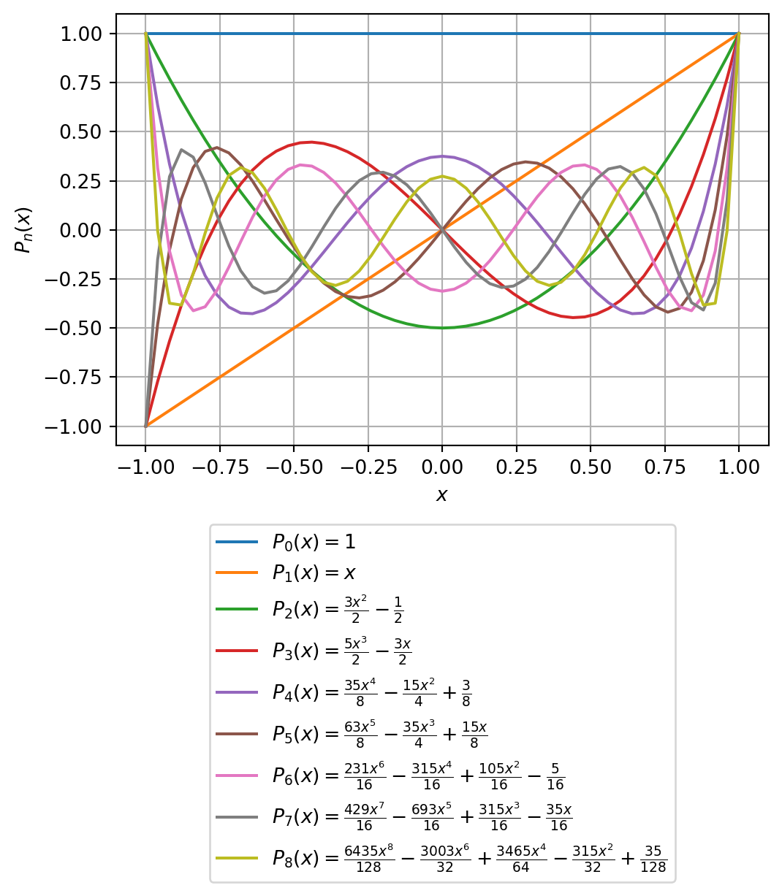

Next, we define a symbolic expression which provides (not evaluates) the formula of Rodrigues. Note that we introduce a symbolic differentiation (up to order n) by using the Derivative function. The differentiation can later be carried out explicitly by calling the method .doit().
We observe that Legendre polynomials are polynomials in \(\cos\theta\).
Let’s visualize:
Show the code
xx = np.linspace(-1, 1, 51)ax, fig = plt.subplots(figsize=(6,4))for i inrange(0, 9): ex = Pn.subs(n, i).doit().expand() f = lambdify(x, ex, "numpy") yy = np.array([f(p) for p in xx]) plt.plot(xx, yy, label=f"$P_{i}(x) = $"+f"${latex(ex)}$") plt.xlabel(r'$x$') plt.ylabel(r'$P_n(x)$') plt.grid(True)plt.legend(loc='upper center', bbox_to_anchor=(0.5, -0.16));

Legendre polynomials up to degree 8
In the following we reproduce these results by expanding the inverse distance \(1/r\), which is the main feature of, e.g., the potential of a point mass in \(\mathbb R^3\).
The gravity potential due to a point mass \(m\) located at the point \(\mathbf r'\) observed at the point \(\mathbf r\) is given by
Note that the point mass is not in the center of a sphere, but has been moved slightly along the \(z\)-axis to the point \(\mathbf r' = (0, 0, s)^\top\).
The term \(1/|\mathbf r - \mathbf r'|\) can be expanded in a Taylor series when \(|\mathbf r'| \ll |\mathbf r|\).
Let \(\mathbf r = (x, y, z)^\top\) and \(\mathbf r' = (0, 0, s)^\top\). The Euclidean distance between the point mass and the point of observation is \(q = |\mathbf r - \mathbf r'|\). With \(r = |\mathbf r|\) and \(s = |\mathbf r'|\) we can rewrite the term \(1/q\) using the Theorem of Cosines as
The \(P_n(\cos\theta)\) are polynomials of degree \(n\) in \(\cos\theta\).
The polynomial coefficients in the binomial series are binomial coefficients given by \[
\left( -1/2 \atop n \right)
\] The binomial coefficients for \(0 \le n \le 4\) are:
Show the code
[binomial(Rational(-1, 2), i) for i inrange(0, 5)]
[1, -1/2, 3/8, -5/16, 35/128]
Next, we expand \[
f(r, \theta) = \frac{1}{r \sqrt{1 + \left(\dfrac{s}{r}\right)^2 - 2 \dfrac{s}{r}\cos\theta}}
\] into a series. To this end, we define a symbolic expression for \(f\).
Show the code
r, s, b = symbols('r s b')f =1/ r / sqrt(1+ b)mydisplay('f(b) = ', f, '')
This is — up to the leading term — the same expression that we have derived above by a series expansion of \(f(r, \theta)\).
It can be demonstrated that similar results can be obtained when we form the summation \[
\sum_{n=0}^\infty \left( \frac{s}{r}\right)^n \, P_n(\cos\theta)
\]
(Note that the number of terms differs when we stop the summation for a finite value of \(n\).)
Show the code
ss =1for i inrange(1,6): ss = ss + (s/r)**i * Pn.subs(n, i).doit().subs(x, cos(theta))display(simplify(ss).collect(cos(theta)).expand().subs(sin(theta)**2, 1- cos(theta)**2).collect(s/r).expand())
We illustrate the Legendre polynomials on the surface of a sphere, i.e., for \(r=const\). The potential function is a function of \(\theta\) only. Hence, Legendre polynomials are referred to as zonal spherical harmonics.
The Legendre polynomials can be defined as the coefficients in a formal expansion in powers of \(t\) of the generating function\[
\frac{1}{\sqrt{1-2xt+t^2}} = \sum_{n=0}^\infty P_n(x) t^n.
\] The coefficient of \(t^n\) is a polynomial in \(x\) of degree \(n\) with \(|x| \le 1\).
In our approach outlined above, we have set \[
t =: \frac{s}{r}
\] and \[
x =: \cos\theta.
\]
A further definiton of the Legendre polynomials is given in terms of solutions to Legendre’s differential equation\[
(1 - t^2) P_n''(x) - 2 x P_n'(x) + n(n+1) P_n(x) = 0.
\]